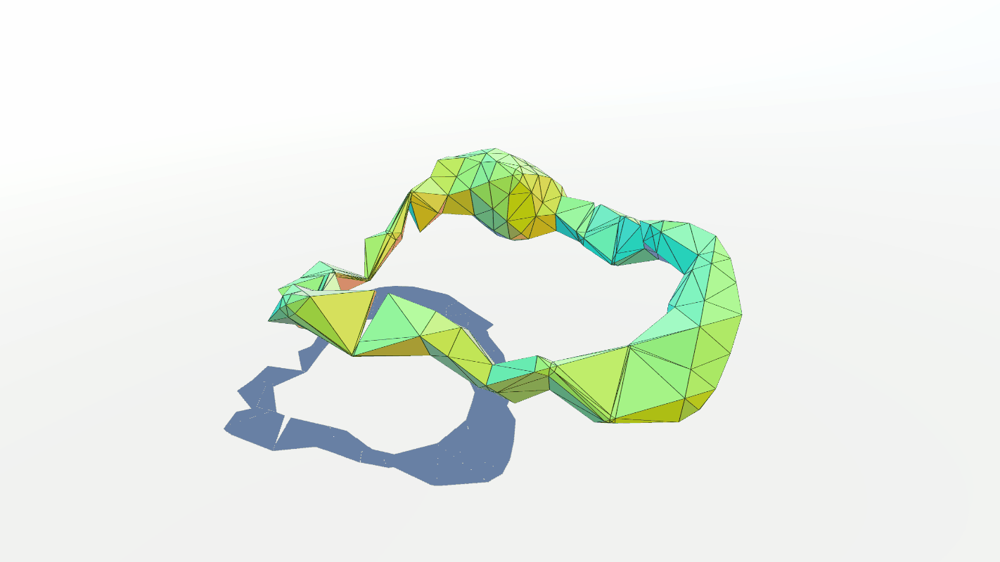
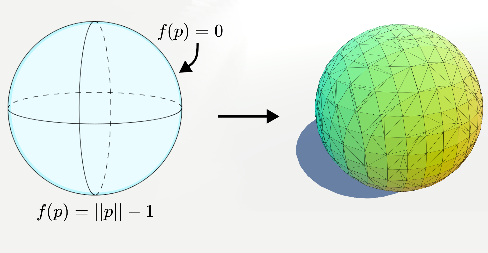
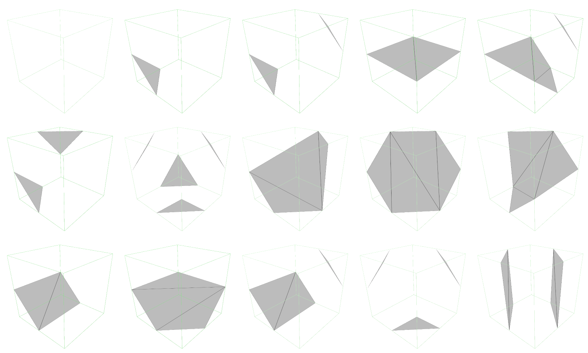
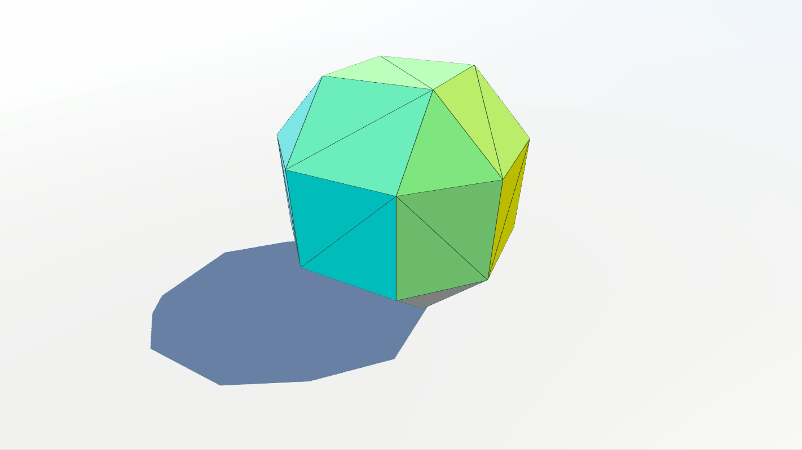
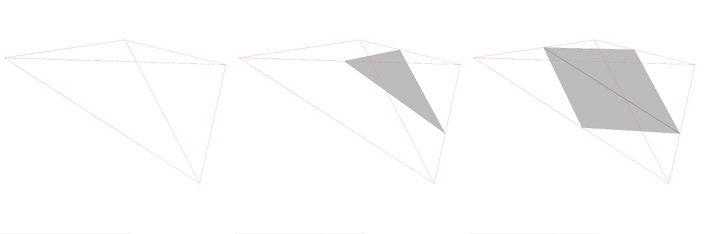
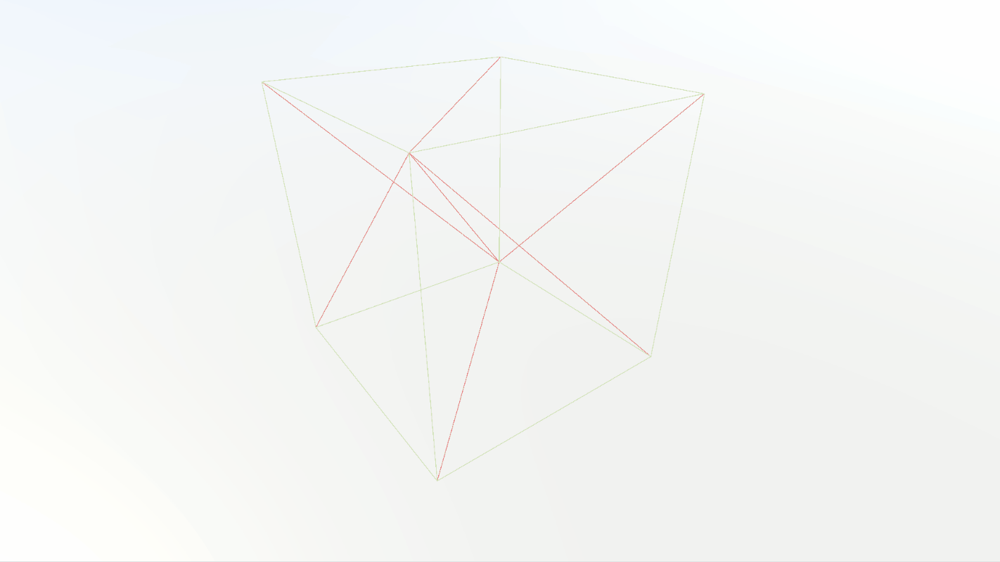

Projects / Posts
Marching Simplex
An intent to improve the Marching Cube algorithm gone wrong.

Marching Cube
Marching cubes is a method from a mesh to create a scalar field (function from R^3 to R), with boundary at f = 0.

Also notorious for being the first "software patent" which is a concept out of reach for me. Usage in video game for dynamic terrain : children of tomorrow, no man's sky. understood how it could work.
Idea is the following : evaluate the scalar field at each corner of a cube, to determine which corner is inside/outside the field, and given the possibility instantiate on of the many triangles correctly.

Increasing resolution of the grid : more precision.

Marching Tetrahedra
Many edge cases, especially two equivalent dispositions, solved by dual contouring, but causes other issues. So an alternative is tetrahedrons because there are less possibilities and was not patented.

Placed also in a grid, usuall 6 per cubes but also 5 per cubes.

Smaller lookup table, but more now 19 edges per cubes vs previous 12, which is more costly but can provide more resolution, it's a trade-off, I personnaly don't really like its generated mesh, tends to produce much more faces than marching cube for not so much improved precision. [image marching tetrahedrons]
Marching Simplex
The idea is to, instead of forcing ourselves to transform the 3D-space tesselation made out of cubes into tetrahedras, rather use a native tetrahedra space tesselation. [image]
Code slightly more complex as we now need to sample on a body-centered cubic (BCC) latice (notice the sample point inside each voxel which was not present before).
After small research when writing this post, I discovered I was not the first coming up with the idea as it was described in "A new tetrahedral tesselation scheme for isosurface generation" (hard to find in open access), and also later described in "Isosurfaces on Optimal Regular Samples" which clearly points at the limitations of BCC (but would have saved me the pleasure implementing it on GPU).
A table with triangle count + picture (what I sent to Lyon)
A few other models with different scale
Code
Still if you are interested for a GPU Unity Compute Shader Marching Cube, Marching Tetrahedrons and Marching Simplex implementation please check it out [gif of the unity scene?]